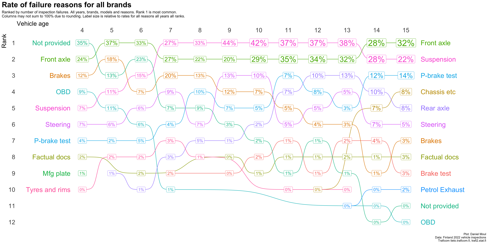

The data set includes the most common reasons that inspections failed for most (model_year, brand, model). Some (model_year, brand, model) include the second-most and third-most common reasons. To be included as a first, second or third most common reason, it must have been recorded for at least 10% of the vehicles in that (model_year, brand, model). I use vehicle_age in place of model_year below.
In the tables below (Table 4.1) I rank reasons by the number of inspection failures reported having this reason in two ways: (a) considering only the most common reason for each (model_year, brand, model); and (b) also including second and third most common reasons when they are available. I estimate the rate of second and third-most common reasons at 35% and 15% respectively. Since the order of the reasons are quite similar, I use (a) “most common reasons” in the plots in this chapter, since it’s easier to understand.
Table 4.1: Reasons for inspection failure: all ages, brands and models
(a) Most common reasons
reason
n_failures
rank
Suspension
68320
1
Front axle
66715
2
P-brake test
18165
3
Rear axle
16051
4
Steering
14219
5
Brakes
12097
6
Chassis etc
6423
7
Not provided
5017
8
Brake test
4154
9
Factual docs
2990
10
OBD
1305
11
Petrol Exhaust
1045
12
Tyres and rims
710
13
Mfg plate
39
14
(b) All reasons
reason
n_failures
rank
Suspension
86358
1
Front axle
82700
2
P-brake test
33499
3
Brakes
29292
4
Steering
23045
5
Rear axle
21526
6
Brake test
11960
7
Chassis etc
8201
8
Not provided
5017
9
Factual docs
3934
10
OBD
3521
11
Tyres and rims
2528
12
Petrol Exhaust
2297
13
Diesel Exhaust
477
14
Mfg plate
159
15
Bodywork
28
16
Headlamp
26
17
Safety equip
20
18
Registr markings
6
19
Stability control
6
20
4.2 Most common reasons by vehicle age
As vehicles age and are driven farther, there are more inspection failures, and the number of most common reasons for failure increases.
Problems with the front axle and suspension are the most common over most years (Figure 4.1). As vehicles age there are more problems, so while from about age 10 there are about 9K vehicles failing with these two reason as the most common (panel A), the percentage of failures of these two reasons goes down panel B).
Figure 4.1: Most common failure count and rate by vehicle age (all brands)
4.3 Ranked most common reasons by vehicle age
The changes are easier to see in a simple ranking (Figure 4.2).
4.3.1 All brands
Show the code
plot_most_common_reasons <-function(tbl,mytitle ="Most common failure reasons",mysubtitle ="Ranked by number of failures. All years, brands, and models. Rank 1 is most common." ) {# test # tbl <- dta_reasons_all_yearly_weighted # mytitle = "Failure reasons",# mysubtitle = "Ranked by number of failures. All years, brands, and models. Rank 1 is most common."tbl |>ggplot(aes(vehicle_age, rank, color = reason)) +#failure_reason_1),geom_bump(show.legend =FALSE) +geom_point(show.legend =FALSE) +geom_label(aes(label = reason), #failure_reason_1),show.legend =FALSE,size =5) +scale_x_continuous(breaks =1:15,position ="top") +scale_y_reverse(breaks =1:15) +theme(panel.border =element_blank(),axis.ticks =element_blank(),axis.text =element_text(size =18),axis.title.x =element_text(size =18, hjust =0),axis.title.y =element_text(size =18, hjust =1)) +labs(title = mytitle,subtitle = mysubtitle,x ="Vehicle age",y ="Rank",caption = my_caption )}plot_most_common_reasons_freq <-function(tbl,mytitle ="Frequency of most common failure reasons",mysubtitle ="Ranked by number of failures. All years, brands, and models. Rank 1 is most common." ) {# test# tbl <- dta_reasons_all_yearly_weighted# mytitle = "Frequency of failure reasons",# mysubtitle = "Ranked by number of failures. All years, brands, and models. Rank 1 is most common." data_for_plot <- tbl |>mutate(n_k =round(n_failures /1000),plot_label =if_else(n_k ==0,glue("{n_failures}"),glue("{n_k}K")) )data_for_label_left <- data_for_plot |>filter(vehicle_age ==min(vehicle_age))data_for_label_right <- data_for_plot |>filter(vehicle_age ==max(vehicle_age))data_for_plot |>ggplot(aes(vehicle_age, rank, color = reason)) +geom_bump(show.legend =FALSE) +geom_point(show.legend =FALSE) +geom_label(aes(label = plot_label, size = n_failures),show.legend =FALSE) +geom_text(data = data_for_label_left,aes(x = vehicle_age, y = rank, color = reason, label = reason),hjust =1, nudge_x =-0.4, size =7,show.legend =FALSE) +geom_text(data = data_for_label_right,aes(x = vehicle_age, y = rank, color = reason, label = reason),hjust =0, nudge_x =0.5, size =7,show.legend =FALSE) +scale_x_continuous(breaks =4:15,position ="top") +scale_y_reverse(breaks =1:15) +scale_size_continuous(range =c(4, 11)) +coord_cartesian(x =c(2.5, 17)) +theme(panel.border =element_blank(),axis.ticks =element_blank(),axis.text =element_text(size =18),axis.title.x =element_text(size =18, hjust =0),axis.title.y =element_text(size =18, hjust =1)) +labs(title = mytitle,subtitle = mysubtitle,x ="Vehicle age",y ="Rank",caption = my_caption )}plot_most_common_reasons_rate <-function(tbl,mytitle ="Frequency of most common failure reasons",mysubtitle ="Ranked by number of failures. All years, brands, and models. Rank 1 is most common." ) {# test# tbl <- dta_reasons_all_yearly_weighted# mytitle = "Frequency of failure reasons",# mysubtitle = "Ranked by number of failures. All years, brands, and models. Rank 1 is most common." data_for_plot <- tbl |>mutate(pct_reason = n_failures /sum(n_failures),.by =c(vehicle_age)) |>mutate(pct_reason_all_years = n_failures /sum(n_failures)) |>mutate(plot_label =percent(pct_reason, accuracy =1) )data_for_label_left <- data_for_plot |>filter(vehicle_age ==min(vehicle_age))data_for_label_right <- data_for_plot |>filter(vehicle_age ==max(vehicle_age))data_for_plot |>ggplot(aes(vehicle_age, rank, color = reason)) +geom_bump(show.legend =FALSE) +geom_point(show.legend =FALSE) +geom_label(aes(label = plot_label, size = pct_reason_all_years),show.legend =FALSE) +geom_text(data = data_for_label_left,aes(x = vehicle_age, y = rank, color = reason, label = reason),hjust =1, nudge_x =-0.4, size =7,show.legend =FALSE) +geom_text(data = data_for_label_right,aes(x = vehicle_age, y = rank, color = reason, label = reason),hjust =0, nudge_x =0.5, size =7,show.legend =FALSE) +scale_x_continuous(breaks =4:15,position ="top") +scale_y_reverse(breaks =1:15) +scale_size_continuous(range =c(4, 9)) +coord_cartesian(x =c(2.5, 17)) +theme(panel.border =element_blank(),axis.ticks =element_blank(),axis.text =element_text(size =18),axis.title.x =element_text(size =18, hjust =0),axis.title.y =element_text(size =18, hjust =1)) +labs(title = mytitle,subtitle = mysubtitle,x ="Vehicle age",y ="Rank",caption = my_caption )}
Show the code
plot_most_common_reasons( dta_reason_1_overall_yearly_weighted,mytitle =glue('Most common failure reasons'),mysubtitle ="Ranked by number of inspection failures. All years, brands, models, and reasons. Rank 1 is most common.")
Figure 4.2: Most common reasons for inspection failure by vehicle age (all brands)
Figure 4.3 shows the same rankings with the label being the frequency of each ranked item.
Show the code
plot_most_common_reasons_freq( dta_reason_1_overall_yearly_weighted,mytitle =glue('Frequency of most common failure reasons for all brands'),mysubtitle ="Ranked by number of inspection failures. All years, brands, models and reasons. Rank 1 is most common.")
Figure 4.3: Frequency of most common reasons for inspection failure by vehicle age (all brands)
Figure 4.4 shows the same rankings with the label being the rate of each ranked item in that column (one vehicle age).
Show the code
plot_most_common_reasons_rate( dta_reason_1_overall_yearly_weighted,mytitle =glue('Rate of failure reasons for all brands'),mysubtitle =glue("Ranked by number of inspection failures. All years, brands, models and reasons. Rank 1 is most common.","\nColumns may not sum to 100% due to rounding. Label size is relative to rates for all reasons all years all ranks."))

Figure 4.4: Rate of most common reasons for inspection failure by vehicle age (all brands)
4.3.2 Failure reasons for each of the most popular 10 brands
Below are rankings for the most popular 10 brands shown in Figure 1.6. Note that Figure 4.5 - Figure 4.14 may be distorted in multiple ways:
By depressed inspection counts in years where the focus brand is missing data (vehicle age 6 and 8). See Figure 1.4.
By there being a limited number of models. This limits the number of most common reasons that can be included.
Show the code
plot_most_common_reasons(subset_by_brand_dta_most_common_reasons_yearly_weighted(dta_working_set,mybrand ="Toyota"),mytitle =glue('Most common failure reasons: Toyota'),mysubtitle ="Ranked by number of inspection failures. All years and models. Rank 1 is most common.")
Figure 4.5: Most common reasons for inspection failure by vehicle age (Toyota)
Show the code
plot_most_common_reasons(subset_by_brand_dta_most_common_reasons_yearly_weighted(dta_working_set,mybrand ="VW"),mytitle =glue('Most common failure reasons: Volkswagen'),mysubtitle ="Ranked by number of inspection failures. All years and models. Rank 1 is most common.")
Figure 4.6: Most common reasons for inspection failure by vehicle age (Volkswagen)
Show the code
plot_most_common_reasons(subset_by_brand_dta_most_common_reasons_yearly_weighted(dta_working_set,mybrand ="Volvo"),mytitle =glue('Most common failure reasons: Volvo'),mysubtitle ="Ranked by number of inspection failures. All years and models. Rank 1 is most common.")
Figure 4.7: Most common reasons for inspection failure by vehicle age (Volvo)
Show the code
plot_most_common_reasons(subset_by_brand_dta_most_common_reasons_yearly_weighted(dta_working_set,mybrand ="MB"),mytitle =glue('Most common failure reasons: Mercedes-Benz'),mysubtitle ="Ranked by number of inspection failures. All years and models. Rank 1 is most common.")
Figure 4.8: Most common reasons for inspection failure by vehicle age (Mercedez-Benz)
Show the code
plot_most_common_reasons(subset_by_brand_dta_most_common_reasons_yearly_weighted(dta_working_set,mybrand ="Ford"),mytitle =glue('Most common failure reasons: Ford'),mysubtitle ="Ranked by number of inspection failures. All years and models. Rank 1 is most common.")
Figure 4.9: Most common reasons for inspection failure by vehicle age (Ford)
Show the code
plot_most_common_reasons(subset_by_brand_dta_most_common_reasons_yearly_weighted(dta_working_set,mybrand ="Skoda"),mytitle =glue('Most common failure reasons: Skoda'),mysubtitle ="Ranked by number of inspection failures. All years and models. Rank 1 is most common.")
Figure 4.10: Most common reasons for inspection failure by vehicle age (Skoda)
Show the code
plot_most_common_reasons(subset_by_brand_dta_most_common_reasons_yearly_weighted(dta_working_set,mybrand ="BMW"),mytitle =glue('Most common failure reasons: BMW'),mysubtitle ="Ranked by number of inspection failures. All years and models. Rank 1 is most common.")
Figure 4.11: Most common reasons for inspection failure by vehicle age (BMW)
Show the code
plot_most_common_reasons(subset_by_brand_dta_most_common_reasons_yearly_weighted(dta_working_set,mybrand ="Audi"),mytitle =glue('Most common failure reasons: VW'),mysubtitle ="Ranked by number of inspection failures. All years and models. Rank 1 is most common.")
Figure 4.12: Most common reasons for inspection failure by vehicle age (Audi)
Show the code
plot_most_common_reasons(subset_by_brand_dta_most_common_reasons_yearly_weighted(dta_working_set,mybrand ="Nissan"),mytitle =glue('Most common failure reasons: Nissan'),mysubtitle ="Ranked by number of inspection failures. All years and models. Rank 1 is most common.")
Figure 4.13: Most common reasons for inspection failure by vehicle age (Nissan)
Show the code
plot_most_common_reasons(subset_by_brand_dta_most_common_reasons_yearly_weighted(dta_working_set,mybrand ="Kia"),mytitle =glue('Most common failure reasons: Kia'),mysubtitle ="Ranked by number of inspection failures. All years and models. Rank 1 is most common.")
Figure 4.14: Most common reasons for inspection failure by vehicle age (Kia)